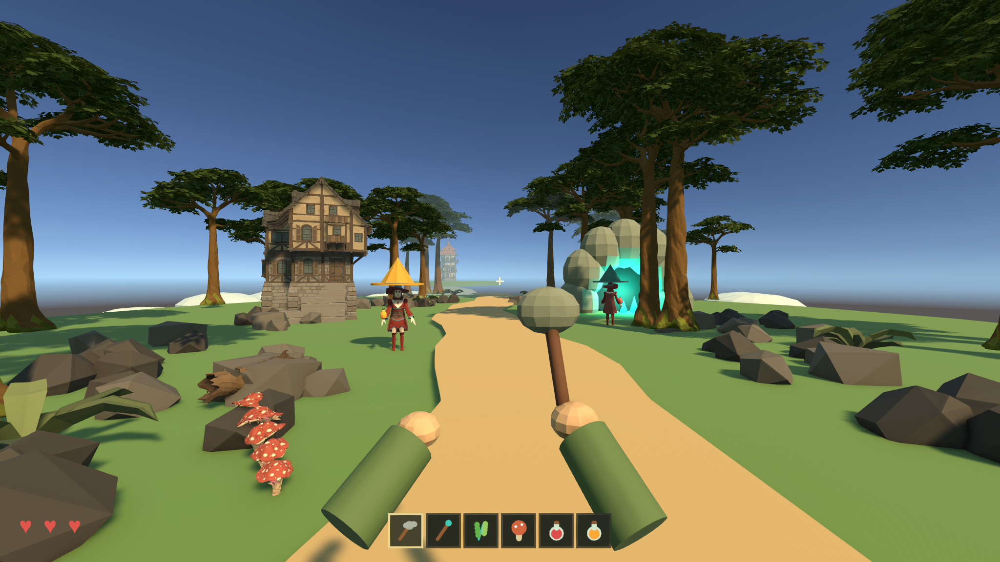

An island, an inherited book, a little trouble
Little Witches in the Wood
First-person cooperative exploration & crafting.

Curiosity is the compass.
Gather mushrooms along the trail, investigate the ore-lit cave, or return to Grandpa's cottage. A tower on another floating outcrop keeps the larger mystery in sight.
WoodlandPOLYGON Enchanted Forest
LandmarksPOLYGON Fantasy Kingdom
TeammatesPOLYGON Fantasy Characters
Custom geometryIsland, cave, ore, hands and gathering tool